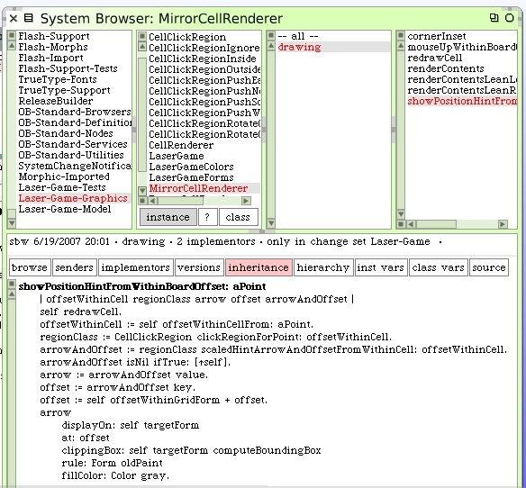

Clean Up Left-Over Hints
We have a problem to solve. You've probably already noticed this if you've played at all with the LaserGame morph in its current implementation. There are "ghost" rotation arrows being left on cells.
This is interesting because, at least in the playing around that I've done so far, the push hint arrows are never left behind. It seems to be only the rotation arrows. We have a subtle bug somewhere.
Now I really do not know, as this is being written, what the real bug is. I wonder if it's a transition detection problem when the cursor moves into the ignored region after having been inside the outer click region? The arrow in the diagram below shows where I am thinking about.
What's a good way to determine if this is the issue? Here's the "show hint" code in the mirror cell renderer.
What if the "arrowAndOffset" object is nil because we are in a region that needs no arrow, but we just left the outside click region? Early in this method we perform a #redrawCell. That should cause the cell to be repainted without any arrows. Then if we get a non-nill result for "arrowAndOffset" we draw the arrow. If "arrowAndOffset" was nil we simply don't draw the arrow. The cell should be without any arrows at this point then. So this doesn't seem to be the problem.
We could enable some diagnostics again and see what events we get while moving the cursor rapidly between cells. That will tell us a lot I'll bet.
We should do a little bit of refactoring to make the diagnostics easier to write. There are 2 implementers of the #showPositionHintFromWithinBoardOffset: method. One at the CellRenderer superclass where it currently does nothing and another (shown) on the MirrorCellRenderer.
The temporary variable "cellPosn" is only used in the calculation for "offsetWithinCell". This will prove to be useful in the superclass. Let's extract that piece of code and put it on the superclass CellRenderer.
We'll use that method in our #showPositionHintFromWithinBoardOffset: code in the mirror renderer.
Here's the diagnostic code for the superclass.
And now for the mirror renderer class.
Open up a Transcript window and close and re-open the LaserGame morph so we get a "clean" one without any of those troubling ghost arrows. Now move the cursor between cells and stop when you see the bug.
Here's what I found.
I started with the cursor over the target cell and then moved swiftly southwards. Look at the Transcript diagnostics. It begins at the target cell at location 5@1.
Then when we received an event for the cell below it at 5@2 the region reported was the ignore region. That sounds correct. As the cursor went further downwards it transitioned to the outside click region for cell 5@2.
However the next entry in the log is a surprise. It shows it went to cell 5@3 and on the inside click region. That means we "skipped" quite a few places.
The event path expected, if we ignore repeats within the same cell, should have been something like this:
|
Examination of this sequence of events reveals something obvious we should have thought about before. The operating system must "sample" mouse events at some given, and probably very fast, rate. Squeak then must process the events it is given. It's easy to believe that there is no "promise" that every intermediate event would be generated. We need to account for the fact that mouse move events can be pretty far apart when the cursor is traveling quickly. As we see here, the cell regions can be skipped over.